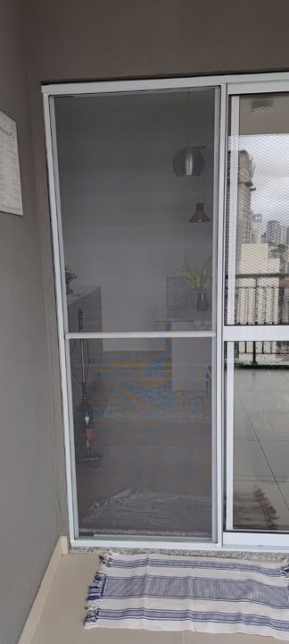
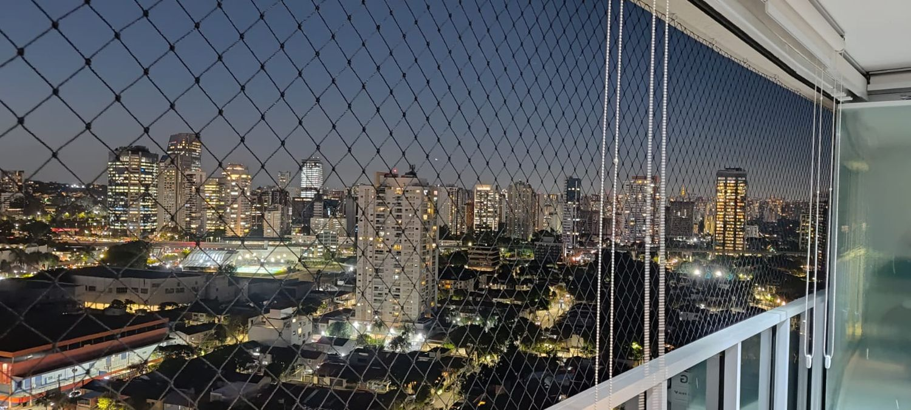

Instalação de Redes de Proteção
Segurança para crianças e pets em janelas, sacadas, escadas e piscinas, com tela resistente e instalação firme.
Orçar Rede de ProteçãoRedes de proteção · Telas mosqueteiras · Varais
Instalação especializada de redes de proteção, telas mosqueteiras sob medida e fabricação própria de varais com acabamento impecável e alta durabilidade.
Nossos serviços
Cada projeto é medido e instalado sob medida para o seu ambiente, com material resistente e acabamento limpo.
Segurança para crianças e pets em janelas, sacadas, escadas e piscinas, com tela resistente e instalação firme.
Orçar Rede de ProteçãoVarais de teto e de parede de fabricação própria, feitos sob medida para aproveitar cada espaço da sua área de serviço.
Orçar Varal Sob Medida
Ventilação natural sem insetos. Telas mosqueteiras sob medida para janelas e portas, com instalação limpa e discreta.
Orçar Tela MosqueteiraPortfólio
Veja instalações feitas em apartamentos e casas. Toque em uma foto para ampliar.

Sobre a Lucas Proteções
A Lucas Proteções nasceu para dar tranquilidade às famílias. Trabalhamos com redes de proteção, telas mosqueteiras e varais de fabricação própria, sempre com foco em segurança, durabilidade e um acabamento que respeita a sua casa.
Telas e fixações escolhidas para resistir ao sol, à chuva e ao uso diário.
Materiais de alta resistência para proteger crianças e animais de estimação.
Fixação firme e tensionamento correto, para uma proteção que você pode confiar.
Profissionais experientes, atenção ao detalhe e atendimento rápido pelo WhatsApp.
Chame no WhatsApp, conte o que precisa e envie fotos do local.
Definimos medidas e a melhor solução para o seu ambiente, sem compromisso.
Nossa equipe instala com cuidado e deixa tudo limpo e seguro.
Depoimentos
“[MODELO] Escreva aqui o depoimento real de um cliente sobre a instalação da rede de proteção.”
“[MODELO] Escreva aqui o depoimento real de um cliente sobre o varal ou a tela mosqueteira.”
“[MODELO] Escreva aqui o depoimento real de um cliente sobre o atendimento e o prazo.”
Em janelas, sacadas, varandas, escadas, mezaninos, piscinas e áreas de lazer. Também protegemos ambientes para pets.
É só clicar em qualquer botão de orçamento e falar com a gente no WhatsApp. Envie fotos e medidas aproximadas do local e retornamos com a proposta. O orçamento é grátis.
Sim. Fabricamos varais de teto e de parede de acordo com o espaço disponível na sua área de serviço, com acabamento caprichado.
Não. A tela mosqueteira mantém a circulação de ar e a iluminação natural, barrando insetos. Indicamos o modelo ideal para cada janela ou porta.
O prazo varia conforme o tamanho e o tipo do serviço. Informamos tudo com clareza no orçamento.
Fale agora com a nossa equipe e receba seu orçamento grátis.
Falar com um Especialista Agora